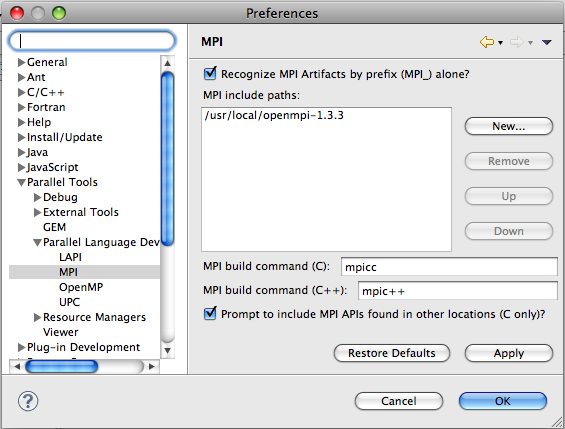

Setup for MPI Tools within the Parallel Language Development Tools
Terminology of CDT projects
Note: the older versions of CDT (4.0 and earlier)
refer to a C project in which it manages the makefile as a "Managed Make Project" or a "Managed Build Project"
and a project which
you supply the makefile is a "Standard Make project."
The current version of CDT that works with PTP 4.0 is CDT 7.0.
CDT 5.0 and later refers to a C project in which it manages the makefile as just a "C Project" and a project which
you supply the makefile is a "Makefile project."
Both terminologies are sometimes used in these instructions.
Project Setup
To use the PTP Parallel Language Development
Tools feature for MPI development, you need to
- Specify the MPI include path in preferences, and
- Add the MPI include files etc. to the build information for each project.
Specifying the MPI Include path in Preferences
During project creation, you will be prompted if the MPI (or OpenMP) include path hasn't been set up in PLDT Preferences.
The first time you use the New Project Wizard to create an MPI or OpenMP project,
you'll be prompted to set up the preferences to point to the appropriate header files.
Or, you can set it up ahead of time as specified below.
To specify the MPI include path, use Window > Preferences. (For Mac, use Eclipse > Preferences)
Under Parallel Tools, Parallel Language Development Tools, MPI...
(Note: If you do not have core PTP installed, the "Parallel Language
Development Tools" section in the preferences will be in the main list.)
Add the path to MPI include paths - this tells PLDT what symbols to look
for in the MPI Artifact view. You can also specify the default MPI build command.
These values will make the MPI New Project Wizard page make more
accurate predictions of settings for new projects.
There is now an optional checkbox to "Recognize MPI Artifacts by prefix alone" - if this
is checked, then artifacts will be identified solely on the "MPI_" prefix, which is
less confusing and error-prone for new users.

The "Prompt to include MPI APIs found in other locations (C only)" indicates whether
it will ask you if MPI APIS found elsewhere
will be considered as artifacts. For example, if you point to <install-loc>/include in the MPI include paths here,
but your source files actually include header files from /usr/local/include, it will prompt you to consider these as well
during the analysis.
This is only valid for C projects, not C++ projects.
Hit OK to close the Preferences dialog.
Add MPI Include paths to each project
The MPI include paths must also be added to each project.
There are two ways to do this.
- Use the PLDT new project wizards, or
- Add the build information manually.
Use the PLDT new project wizards
Create a new "C project"
One way is to use the menu: File->New->C project (if you are already in the C/C++ perspective this may be the simplest).
There are several ways to get to this wizard (including context menu in the Project Explorer view).
Enter a project name; under Project types, expand 'executable' and select, e.g. "MPI Hello World C project"
Note: if you have not set the MPI Preferences yet, you'll be prompted at this point:
See the above Specify the MPI include path in preferences for how to fill this in.
After specifying the preferences, or if it wasn't required, select Next to go to the next page of the New Project Wizard.
On the next page, the Basic Settings page of the wizard, fill in any project template values, e.g. your name.
The name is used in a comment in the file. The "Hello World Greeting" is used in the sample statement
in the code that is generated. The "Source" field indicates the name of the source folder that is generated in the project.
Then select Next.

On the next page, "MPI Project Settings" page, the "Add MPI project settings to this project" should be checked.
If you want to change any of the default values for this project, you can do so
here by unchecking the "Use default information" and altering the values.
The default values were chosen based on your input to the PLDT Preferences above.
Select Finish.
The project is created and should build automatically.
The Eclipse workbench is shown below after creating the new "MPI hello world" project.
The project explorer view on the left shows the project contents.
The source file is under the 'src' directory; expand this to see it.
Double-click on the source file name to edit the source file. The outline view on the
right shows the outline of the file currently shown in the editor.
The Console view at the bottom shows the results of the project build.
Now continue to set up to run the MPI tools
Add the Build Information Manually
If the new project wizard isn't used as described
above to set the MPI information for a project,
the MPI information can be added to the project manually as follows.
- Create a C project
- Note: the following description is for a regular C project (also known as a "Managed Build" CDT project).
For information about Makefile projects, in which you provide the makefile yourself,
see Setup for Makefile projects.
- Set up the include paths etc:
To bring up the Project Properties, rightMouse on the project name, and select "Properties" (at the bottom of the context menu list)
Project Properties, C/C++ Build, Configuration Settings,
Tool Settings tab, Directories
--> Add include path for mpi header files etc. - path to the 'include' dir
Project Properties, C/C++ Build, Configuration Settings,
Tool Settings tab, GCC C Linker, Libraries
- Under "Libraries (-l)" add the symbol "mpi"
- Under "Library search path (-L)" add the path to the 'lib' dir in MPI dir.
- MPI Build Command: Note: If you have an MPI installed that requires a different
build command, such as 'mpicc' instead of 'gcc', specify it here as well.
Select the compiler tool on the left and modify the 'Command:' value.
You probably also need to do the same for the linker tool.
Note that the above instructions describe how to add information to C projects in which the makefile is generated for you,
previously known as "Managed Build" projects. If you provide your own makefile, you will create a "Makefile project"
and create the makefile within that project.
See Setting up project properties for a Makefile project.
Now continue to set up to run the MPI tools
Back to Top | Back to Table of Contents